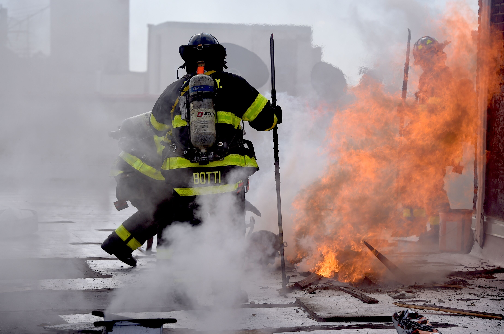
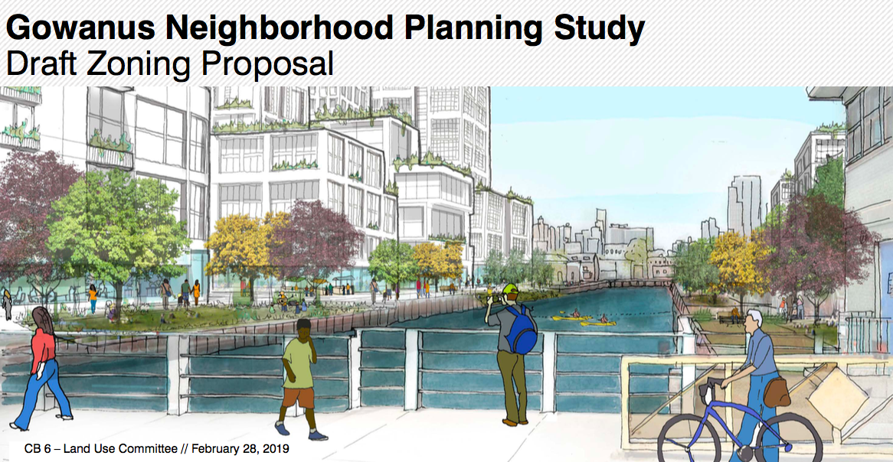

By Todd Maisel - February 25, 2019
DITMAS PARK – A 3-alarm fire raced through the top floor and roof of a six-story apartment building on East 18th Street in Ditmas Park this morning, destroying much of the top floor apartments and making the building uninhabitable, officials said.
By Avi Glickstein - February 12, 2019
SUNSET PARK-Most of the products being created by the tenants of Sunset Park’s Industry City are made to last (with the obvious exception of food). But one company there trades in the ephemeral. What they build are experiences.

By Pamela Wong - March 1, 2019
GOWANUS – The auditorium of P.S. 133 was packed Thursday evening with locals eager to see NYC Department of City Planning‘s (DCP) presentation of the Gowanus Draft Zoning Proposal.